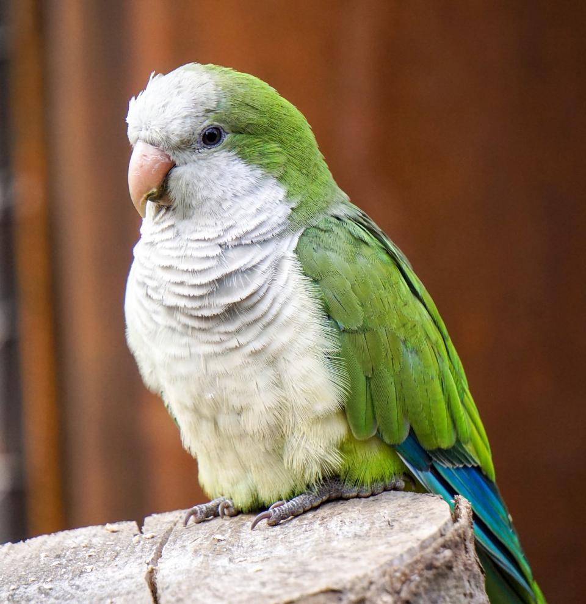

Hi! My name is Jordan Abraham and I am 14 years old. I was born November 28,2005.
I have 2 sibling, one brother and one sister. I also have 2 fish and a bird. My favoirte hobbies are going on bike rides with my dad and playing videogames like Fortnite and Valorant. I also love spanding time with my family.
I play Peruccsion and play in many band such as the top high school band Wind Ensemble. I like to challenge myself and enjoy participating in class.

As a 10th grader, I am taking Business Management, Spanish 3, Computer Science, Wind Ensemble, Alegebra 2 Hrs, World History 10,
Chemistry Hrs, Sports Medicine, and English 10. School is very important to me and I always try to have a great relationship with my teachers. I have 1 bird and 1 fish.
I am very caring and try to help others in anyway I can. Hopefully, my high school year continues to be great and filled with many memories.
Home
Links are interactive buttons in which you click on to access another, page in the website, another website, or another section on your page.
An active link is a link as soon as it is clicked.
A visted link is a link that the user has already visited.
Active link is a link that has been clicked and is currently being fetched by the browser. Visited is a link to a page that has been visited recently.